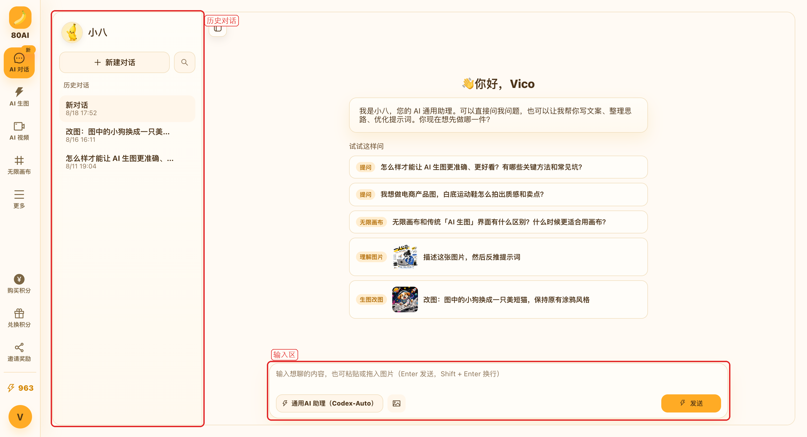
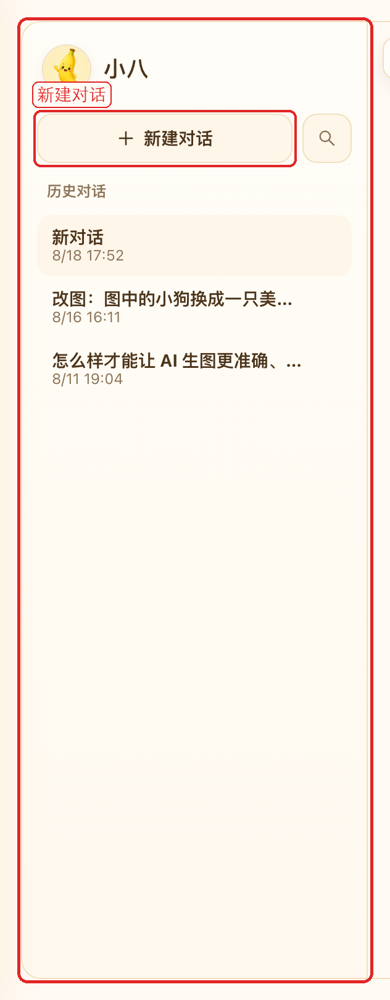
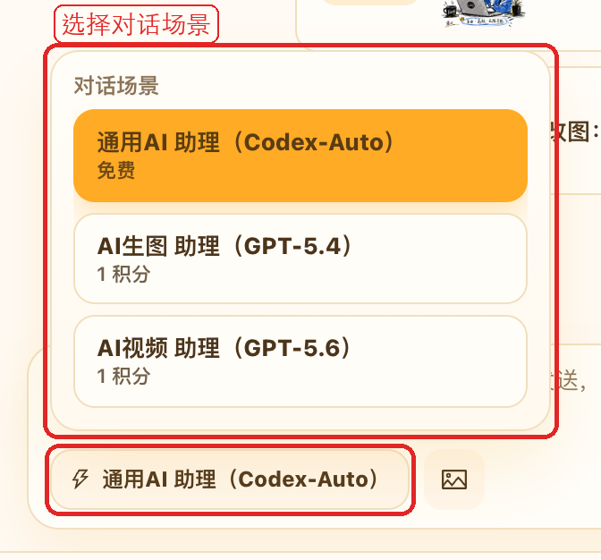
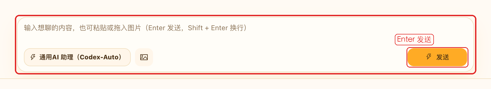
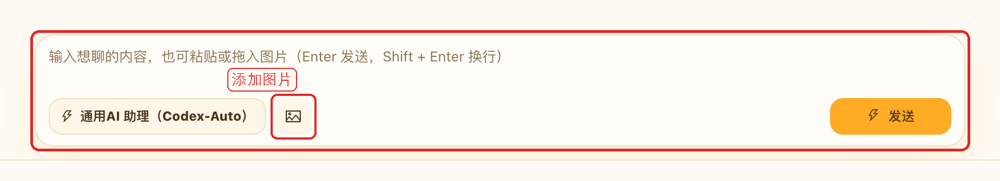
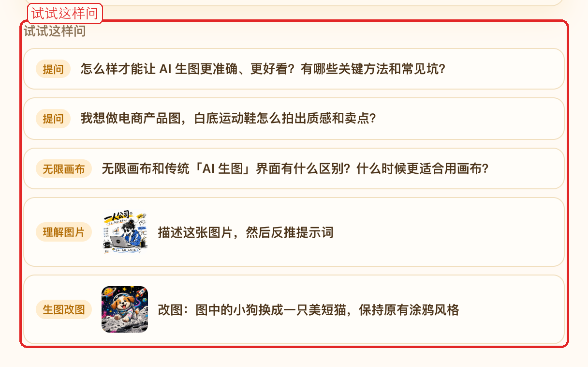
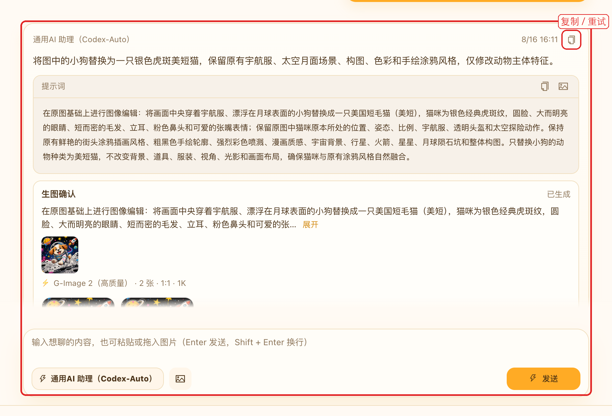
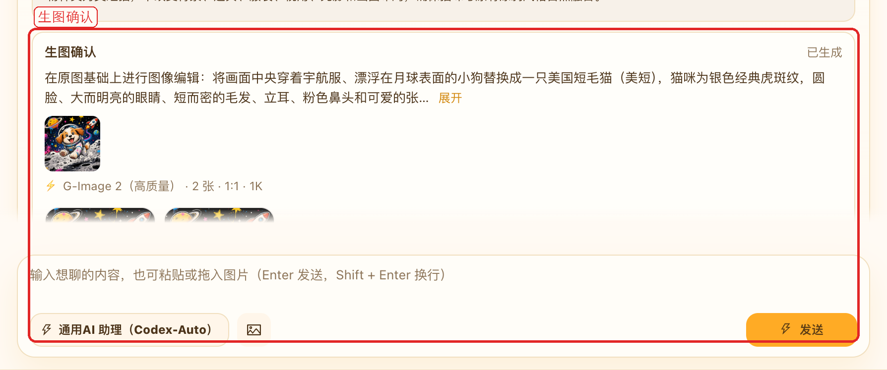
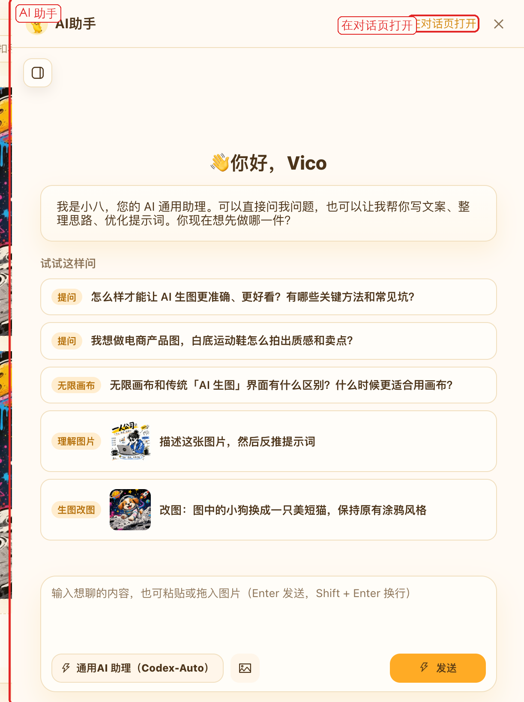
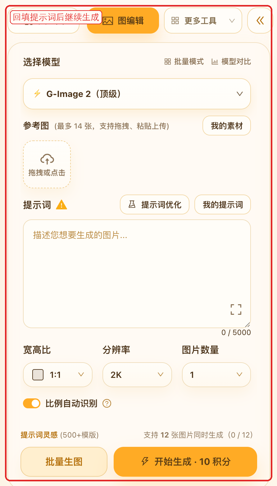

AI 对话
按步骤了解如何进入对话页、选择场景、发送文字和图片，以及把对话结果带到生图页。
1. 进入页面与布局
登录后，在左侧导航中点击「AI 对话」，即可进入完整对话页。助手名称是「小八」。未登录时，部分操作会先弹出登录框。
对话页分成三块：
- 左侧会话栏：新建对话、搜索历史，并切换已有会话。
- 中间消息区：查看问候语、快捷提问和来回消息。
- 底部输入区：写内容、选场景、添加图片，然后发送。

在 AI 生图页右侧，也可以点「AI助手」打开同一套对话。需要更完整的记录时，再点「在对话页打开」。
2. 新建与管理对话
每个会话都是一段独立记录。换主题时建议新建，避免不同问题混在一起。
- 点左上角「新建对话」，会立刻进入空白会话。
- 点放大镜可以按标题搜索历史对话。
- 在列表里点一条记录，就能继续之前的对话。
- 会话右侧的删除图标可以删掉整段记录。删除前会再确认一次。

会话栏左上角的折叠按钮可以收起列表，把空间留给消息。需要对照历史时再展开即可。
3. 选择对话场景
底部输入区左侧可以切换对话场景。不同场景对应不同能力和积分消耗。
- 点击场景名称，打开场景列表。
- 查看每个场景的说明和积分。有的场景免费，有的会按次扣积分。
- 选好后再发送。当前会话会记住这次选择。

发送按钮上也会显示本次预计积分。积分不足时，按页面提示购买或兑换即可。
4. 发送文字消息
在底部输入框写下问题或任务，就可以开始对话。助手回复会按字显示出来。
- 在输入框里写内容。例如提问、改文案、优化提示词。
- 按 Enter 发送；Shift + Enter 换行。
- 也可以直接点右侧「发送」。
- 发送后如果还没出完，可以点「中断」停止本次回复。

消息区会显示「正在思考...」，随后出现助手回复。如果滑到了上面，右下角会出现回到底部的按钮。
5. 发送图片
需要助手看图、描述图片或按图改提示词时，把图片一起发给它。
- 点输入区的图片按钮，从本地选择。
- 直接把图片拖进输入区。
- 也可以从剪贴板粘贴图片。

一次最多添加 4 张。上传完成后，输入区上方会显示缩略图，点叉可以移除。支持 JPEG、PNG、WebP 和 GIF。
6. 快捷提问
空白会话里会看到问候语和「试试这样问」。这些入口由当前场景配置，点一下就会直接发出。
- 带标签的问题适合快速了解能力，例如提问、无限画布、理解图片。
- 带缩略图的条目会连同示例图一起发送，适合看图说话或改图。
- 点卡片就会按当前场景发出，不必自己再抄一遍。

7. 处理回复
助手回复出来后，可以直接复制、重试，或继续追问。
- 复制：复制自己或助手的文字，方便贴到别处。
- 重试：回复失败或效果不好时，按上一条内容再问一次。
- 加载更早消息：会话很长时，顶部可以继续往上翻。
- 预览图片：消息里的图可以点开看大图。

如果助手回复中断或系统出错，气泡里会提示「系统出错，可进行重试」。点重试即可，不必重新组织整段问题。
8. 从对话去生图
小八不只是聊天。对话里出现适合出图的描述时，可以直接带到生图页，或在对话里确认生成。
- 复制并去生图：出现在提示词或代码块旁。点击后会复制内容，并跳到 AI 生图页回填提示词。
- 生图确认卡片：助手也可能直接给出一张确认卡。你可以改模型、张数、比例，看预计积分后再点「确认生图」。
- 卡片上如果带了参考图，会按图编辑处理；没有参考图则按文生图处理。
- 不想生成时点「取消」。失败后也可以在卡片上重试。

9. 生图页的 AI 助手
在 AI 生图页右侧可以看到「AI助手」。登录后点开，就能边聊边改提示词，不必离开当前创作页。
- 侧边栏里的对话和完整对话页是同一套会话。
- 出现合适的提示词时，点「复制并去生图」，内容会回到当前生图页。
- 需要对照更长的历史，或一次看更多消息时，点「在对话页打开」。
- 按 Esc，或点关闭，即可收起助手。

10. 使用建议
- 先选对场景，再开始提问。写提示词、看图和普通问答，效果会更稳。
- 一个主题用一个会话。列表会按第一句话生成标题，之后更好找。
- 改图或反推提示词时，把图和文字一起发，比只写描述更准。
- 准备出图时，优先用「复制并去生图」或确认卡片，少一次来回粘贴。
- 只是想快速改一句提示词，用生图页右侧的 AI 助手就够了。
- 积分消耗以发送按钮和场景说明为准。不确定时先看预计积分。
